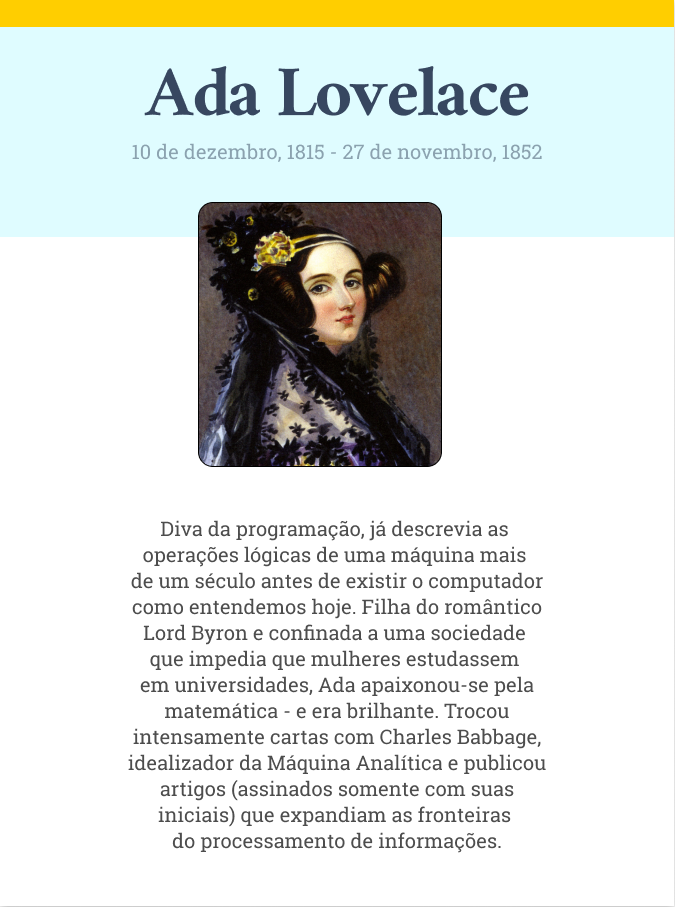

As mulheres que inspiram
A história do mundo foi contada pelos homens. Basta lembrar quantas inventoras, artistas, que você conhece. Mas isso nunca significou que as mulheres não deram importantes contribuições a todos os campos do conhecimento.